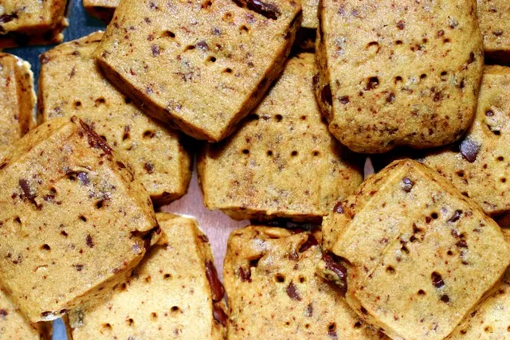

espresso-chocolate shortbread cookies
Description
The best shortbread you will ever eat! Recipe credti: smitten kitchen
Ingredients
- 1 tablespoon (about 4 grams) instant espresso powder
- 1 tablespoon (15 ml) boiling water
- 2 sticks (8 ounces or 225 grams) unsalted butter, at room temperature
- 2/3 cup (80 grams) confectioners’ sugar
- 1/2 teaspoon pure vanilla extract
- 1/4 teaspoon coarse, sea or kosher salt
- 2 cups (250 grams) all-purpose flour
- 4 ounces (115 grams) bittersweet chocolate (plain, or a toffee variety), finely chopped, or 3/4 cup store-bought mini chocolate chips
- Confectioners’ sugar, for dusting (optional)
Steps
- Dissolve the espresso in the boiling water, and set aside to cool to tepid.
- Working with a stand mixer, preferably fitted with a paddle attachment, or with a hand mixer in a large bowl, beat the butter and confectioners’ sugar together on medium speed for about 3 minutes, until the mixture is very smooth. Beat in the vanilla, espresso and salt, then reduce the mixer speed to low and add the flour, mixing only until it disappears into the dough. Don’t work the dough much once the flour is incorporated. Fold in the chopped chocolate with a sturdy rubber spatula.
- Using the spatula, transfer the soft, sticky dough to a gallon-size zipper-lock plastic bag. Put the bag on a flat surface, leaving the top open, and roll the dough into a 9 x 10 1/2 inch rectangle that’s 1/4 inch thick. As you roll, turn the bag occasionally and lift the plastic from the dough so it doesn’t cause creases. When you get the right size and thickness, seal the bag, pressing out as much air as possible, and refrigerate the dough for at least 2 hours, or for up to 2 days.
- Position the racks to divide the oven into thirds and preheat the oven to 325 degrees F. Line two baking sheets with parchment or silicone mats.
- Put the plastic bag on a cutting board and slit it open. Turn the firm dough out onto the board (discard the bag) and, using a ruler as a guide and a sharp knife, cut the dough into 1 1/2-inch squares. Transfer the squares to the baking sheets and carefully prick each one twice with a fork, gently pushing the tines through the cookies until they hit the sheet.
- Bake for 18 to 20 minutes, rotating the sheets from top to bottom and front to back at the midway point. The shortbreads will be very pale–they shouldn’t take on much color. Transfer the cookies to a rack.
- If you’d like, dust the cookies with confectioners’ sugar while they are still hot. Cool the cookies to room temperature before serving.